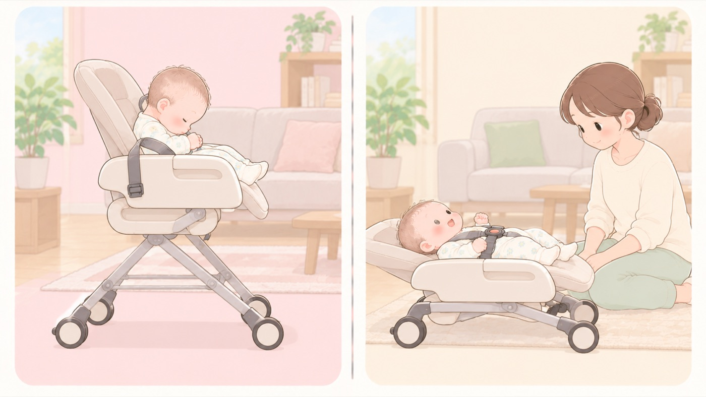

寝かせる器具
ハイローチェアで寝かせるとき
いすとして使える期間と、寝かせてよい期間は別。夜間就寝には使わない
ハイローチェアは、寝かしつけに使われることの多い製品です。ただし取扱説明書では、簡易ベッドとして使えるのは月齢と体重で区切られており、夜間就寝のような長時間寝かせるベッドとしては使えません。高さを変えられるぶん、転落したときの高さもバウンサーとは違います。

左は危険な例、右は安全な例です。コンビ ネムリラの例（製品によって違います）
| リクライニングの角度 | 角度は5段階あり、使える角度が月齢で決まっています。首がすわるまで（新生児〜2・3か月）は、いちばん倒した角度①だけ。2・3か月〜5・6か月は①②。いすとして使う③④⑤は5・6か月からで、③のみ2・3か月から。 |
|---|---|
| 簡易ベッドとして使う | 新生児〜5・6か月ころまで。荷重制限8kg、身長70cmまで。スウィングするときも同じ。 |
| いすとして使う | 5・6か月（腰がすわったころ）から48か月まで。荷重制限18kg。 |
| シートベルト | 必ず使用。18か月未満は肩ベルトも必ず使用。簡易ベッドとして使うとき・スウィングするときも同じ。 |
| 長時間の睡眠 | 一時的なお昼寝などには使えるが、夜間就寝など長時間寝かせるベッドとしては使えない。 |
- すること：首がすわるまでは、背もたれをいちばん倒した角度にする
5段階のうち、新生児から2・3か月のあいだに使えるのはいちばん倒した角度だけです。背もたれを起こすと、自分で頭を支えられずにあごが胸に埋まり、気道が折れます。 - すること：角度を変えたら、シートベルトを締めなおす
背もたれの角度を変えると体の位置がずれるので、そのままではベルトがゆるみ、ずり落ちます。 - すること：簡易ベッドとして使う月齢・体重・身長の上限を確認する
いすとして使える期間より、ベッドとして使える期間のほうがずっと短く設定されています。 - すること：肩ベルトまで締める
18か月未満は肩ベルトも必須とされています。ずり落ちて首が圧迫されるのを防ぐためです。 - すること：使わないときは高さを下げ、キャスターをロックする
高い位置のままだと、落ちたときの高さが大きくなります。キャスターがロックされていないと、赤ちゃんの動きや人がぶつかった拍子に本体が動き、壁や家具に当たります。 - しないこと：夜間の就寝に使わない
一時的なお昼寝には使えますが、長時間寝かせるベッドとしては設計されていません。眠ったら平らな寝床へ移します。 - しないこと：乗せたまま放置しない
シートベルトを締めていても立ち上がることがあります。子どもの手の届くところに製品を放置すると、シートベルトが首に巻き付いて窒息するおそれがあります。 - しないこと：赤ちゃんを乗せたまま、本体ごと持ち上げない
日本小児科学会の委員会は、ベビーチェアやバウンサー等の育児用品は、こどもを乗せたまま持ち上げることを想定した設計ではなく、その行為は極めて危険であるとしています。移動させるときは、キャスターのロックを外して押します。段差を越えるために持ち上げる必要があるなら、先に赤ちゃんを降ろします。 - しないこと：本来の使用目的以外で使わない
設計上の荷重を超えると、フレームや留め具が壊れて一気に傾きます。大人が腰かけたり、荷物を載せたりしません。下にもぐり込んだ子どもの上に倒れると、重さがそのままかかります。
🛍 グッズの選び方
PR- 簡易ベッドとして使える期間を確認します。いすとして使える期間とは別です。
- 肩ベルトまであるものを選びます。腰と股だけの製品は、寝かせる用途には向きません。
- キャスター付きならブレーキがかけやすいかを見ます。毎回かけるものなので、固いと使わなくなります。
- コンビ ハイローチェア ネムリラ Fit AQ🏅 第18回キッズデザイン賞（同シリーズ ネムリラ コードレス AUTO SWING BEDi Long SS EG＋）Amazonで見る →
- コンビ ホワイトレーベル ネムリラ AUTO SWING BEDi Long シェル EG🏅 第18回キッズデザイン賞（同シリーズ ネムリラ コードレス AUTO SWING BEDi Long SS EG＋）Amazonで見る →
- アップリカ ハイローチェア ユラリズム オート ライト（0か月〜4歳頃）0か月〜4歳頃。電動で揺れるAmazonで見る →
- アップリカ ハイローチェア ユラリズム（0か月〜4歳頃・手動スウィング）手動。電源が要らず置き場所を選ばないAmazonで見る →
- コンビ 電動ハイローチェア ネムリラ Auto DR🏅 第18回キッズデザイン賞（同シリーズ ネムリラ コードレス AUTO SWING BEDi Long SS EG＋）Amazonで見る →
- カトージ スイングハイローラック ピッコロ 03417（新生児〜4歳頃）新生児から。手動で揺らすAmazonで見る →
リンクはAmazonアソシエイトリンクです。当サイトはアフィリエイトプログラムに参加しています。Amazonのアソシエイトとして、当サイトは適格販売により収入を得ています。 選び方の方針
この項目の根拠
- ハイローチェア ネムリラ 取扱説明書（コンビ・PDF）（新しいタブで開きます）
リクライニング角度は5段階あり、新生児〜2・3か月（首がすわるまで）は角度①のみ、2・3か月〜5・6か月は①②、5・6か月〜は③④⑤（③のみ2・3か月から）と定められていること。リクライニングで背もたれの角度を変えるときは必ずシートベルトを調節しなおすこと。簡易ベッドとして使うときは新生児〜5・6か月ころまで（荷重制限8kg、身長70cmまで、スウィング時も同じ）、いすとしてのみ使うときは5・6か月から48か月まで（荷重制限18kg）であること。必ずシートベルトを使用し18か月未満は肩ベルトも使用すること。子どもの手の届くところに放置するとシートベルトが首に巻き付き窒息するおそれがあること。シートベルトを締めていても立ち上がるおそれがあり目を離さないこと。一時的なお昼寝などには使えるが夜間就寝など長時間寝かせるベッドとしては使用しないこと。本来の使用目的以外で使用しないこと。 - 傷害速報 No.157 ベビーチェア誤使用による頭頂骨骨折（日本小児科学会・PDF）（新しいタブで開きます）
ベビーチェアやバウンサー等の育児用品は、こどもを乗せたまま持ち上げることを想定した設計ではなく、その行為は極めて危険であること。0歳4か月が、座らせたままベビーチェアごと持ち上げられ、下ろそうとした際に約60cmの高さで体が座面から背もたれ側へ抜けて後方へ落下し、左急性硬膜外血腫と頭頂骨骨折を負った事例。 - 赤ちゃんが安全に眠れるように ～1歳未満の赤ちゃんを育てるみなさまへ～（こども家庭庁）（新しいタブで開きます）
寝かせるときは硬めで傾斜のない寝具を使うこと。